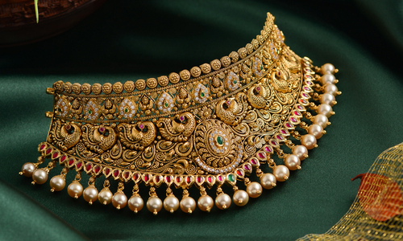
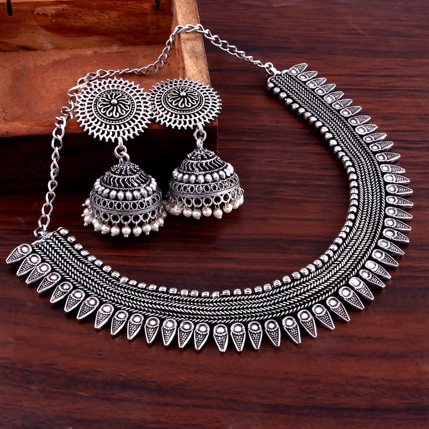
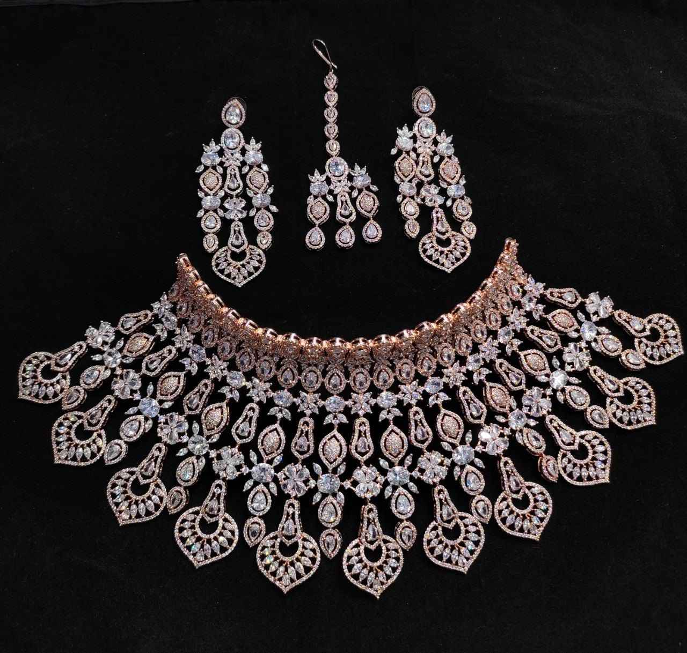
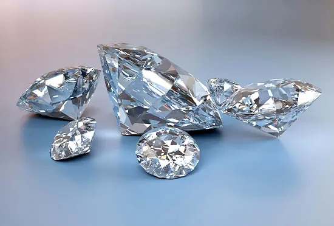

About Malabar

Malabar Gold & Diamonds is an Indian jewellery group headquartered in Kozhikode, Kerala, India. The company was founded by M. P. Ahammed in 1993. As of May 2023, it owns more than 330 showrooms across 11 countries, making it one of the largest chains of jewellery retailer in the world. The company also owns a network of luxury watch boutiques across India, which operates under the name Malabar Watches.
History of Malabar
The Malabar Gold & Diamonds was established in 1993 by M. P. Ahammed. Since 2000, the company has been on an expansion and was reported to be a group worth ₹500 crore in 2005. The company claims that they are the first brand to offer only 100% BIS hallmark gold. Though the company is mainly committed to India, they are also present across the Gulf and Far East markets. In 2012, the company had a turnover of ₹12,000 crore and by the end of 2013, it posted a turnover of ₹22,000 crore. By 2017, the group had opened 27 stores across nations. On 12 January 2018, the company opened 11 outlets in a single day across the globe setting a new record. The number of outlets reached 208 with this launch. Out of the 11 outlets opened, 8 were located in the Gulf region. The new showrooms were established in AL-Hazana Lulu, Al-Khail Mall, Al- Buhaira Lulu, Ajman City Centre and Sahara Centre in the UAE, Lagoona Mall and Mall of Qatar in Qatar, AMK Hub in Singapore, Muscat City Centre in Oman, Warrangal in Telangana, and in Ampang Mall in Malaysia. By 2018, the company had 215 stores across 9 countries with the highest number of stores in India. The Indian market also accounts for about a third of the company’s revenue. The same year, Malabar Gold & Diamonds opened their first showroom in the U.S market. This outlet in Chicago which was also group’s 250th outlet was inaugurated by Neeta Bhushan, Counsel General of India. Later, the company legally converted its UAE operations covering Saudi Arabia, Bahrain and Oman into 100% ownership. Miss World 2017, Manushi Chhillar turns brand ambassador for Malabar Gold and Diamonds in 2018. In January 2023, the company launched its 300th global showroom in Dallas, Texas, United States. With the opening of this showroom, Malabar Gold & Diamonds became the 6th largest jewellery retailer in the world. In May 2023, they launched the biggest jewellery showroom in the world, spanning at an area of 110000 sq ft at Kozhikode. In June 2023, Malabar Gold & Diamonds expanded their operations into Europe by opening a showroom in London. This was also the 320th showroom of the company.
Types of Jewellery
Gold

Silver

Diamonds
GOLD

Types of Gold
Gold Filled, also called Gold Overlay, refers to a layer of at least 10-Karat gold that has been permanently bonded by heat and pressure to one or more surfaces of the support metal, then rolled or drawn to a prescribed thickness. The Karat gold must be at least 1/10th of the total weight. Gold Plate means that a layer of plating of 10+ Karat gold has been bonded to a base metal. The Karat gold content may be less than 1/20th, but it must be properly identified by weight in terms of total metal content. Gold Leaf is just gold plating that's been pounded and applied by hand.
Yellow Gold

Yellow gold is alloyed with copper, zinc and silver. It is malleable, ductile, and generally non-corrosive, so it has a high melting point and is not susceptible to compression.
White Gold

White gold is alloyed with copper, zinc and nickel. The percentage of gold naturally varies, according to the amount of other metal used. It is frequently used in diamond jewellery and considered a classic metal choice. White gold is highly reflective and not subject to tarnish.
Rose Gold

Rose gold (also known as pink gold) is alloyed with copper, and in some cases silver. The proportions are about one part of copper to three parts of 24-karat gold.
SILVER

Types of Silver
Sterling Silver
Sterling silver is the most common and found in most silver jewelry. Sterling silver is made up of 92.5% pure silver and 7.5% copper. The addition of copper makes sterling silver hard and also malleable, making it easy to work with and create different kinds of jewelry such as necklaces, rings, bracelets, and earrings. You'll want to be sure you are purchasing real sterling silver before handing over your credit card. All sterling silver pieces are marked and stamped with a .925 or an abbreviation of "sterling" to let you know it's real.
Fine Silver
Fine silver is the purest form of silver at 99.9%. Fine silver may seem like the best type of silver to use for jewelry, but it is actually a very soft metal. Because of this, it can be easily damaged and can change form over time.
Silver Plate
The metal that makes up a silver-plated product is not actually silver, but another metal that is then covered with a thin silver plate on top. Depending on the type of metal used, such as copper, your jewelry can be pretty durable. However, because it is only a coating, silver-plated jewelry can tarnish easily. Silver-plated jewelry is considered a lower-quality silver and is therefore much less expensive than sterling.
DIAMOND

Types of Diamonds
Natural Diamonds
Regular white colorless diamonds. Not much to expand on them. Basically, these are probably what everybody imagine when you speak with them about diamonds.
Lab Grown Diamonds
Lab grown diamonds also known as man-made diamonds are somewhat of a growinng trend that is developing more and more last few years. The reason is that it is a technological product just like any other “gadget” (no disrespect intended). As such, as technology evolved, these diamonds become cheaper and cheaper to manufacture. While once prices of lab grown diamonds were 30% beneath equivalent regular diamonds, today they are 50%-60% cheaper and some say that in just a few years they will become even 70% cheaper and more.